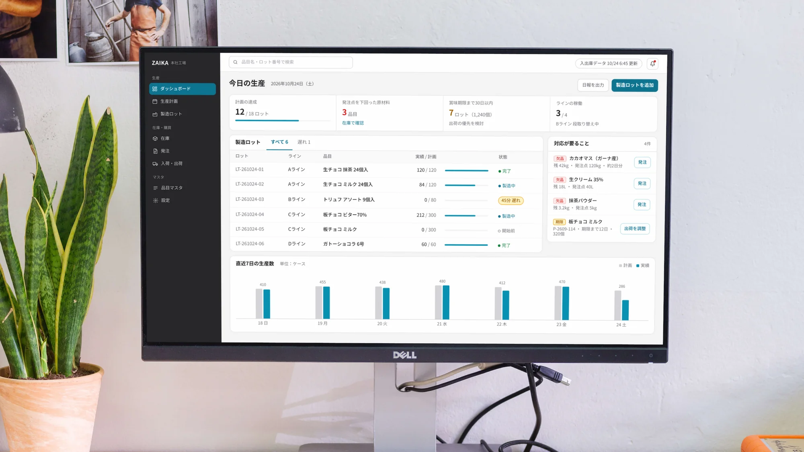
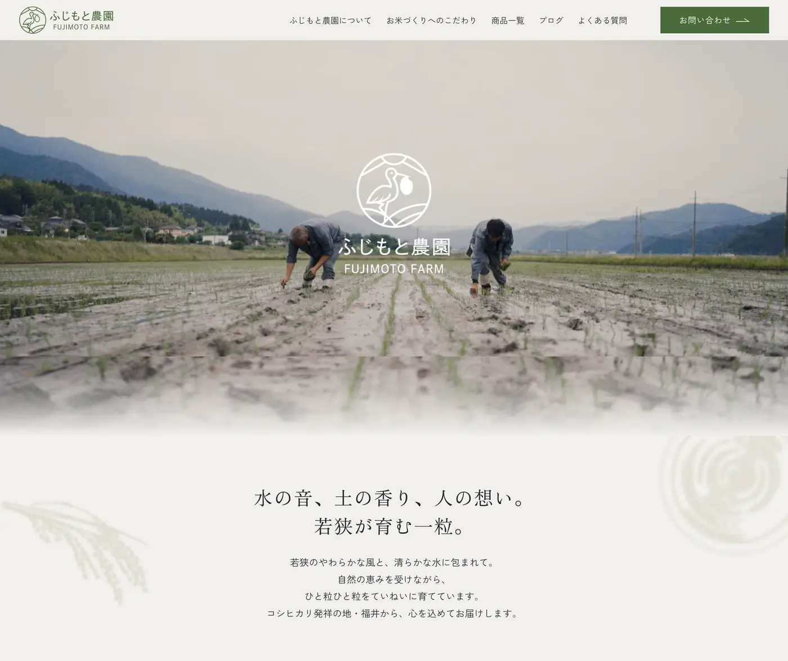
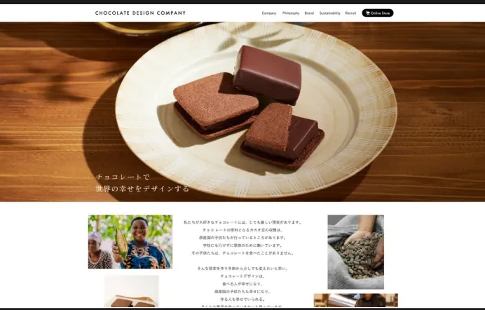
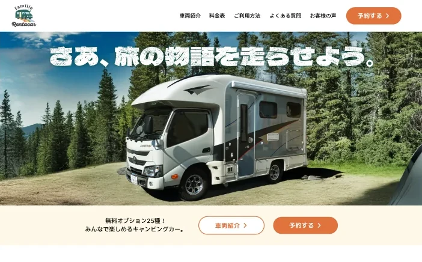
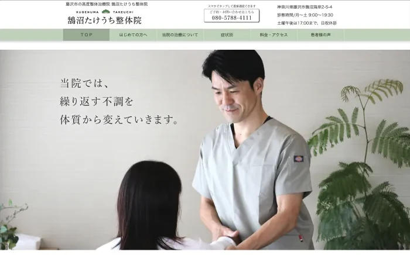
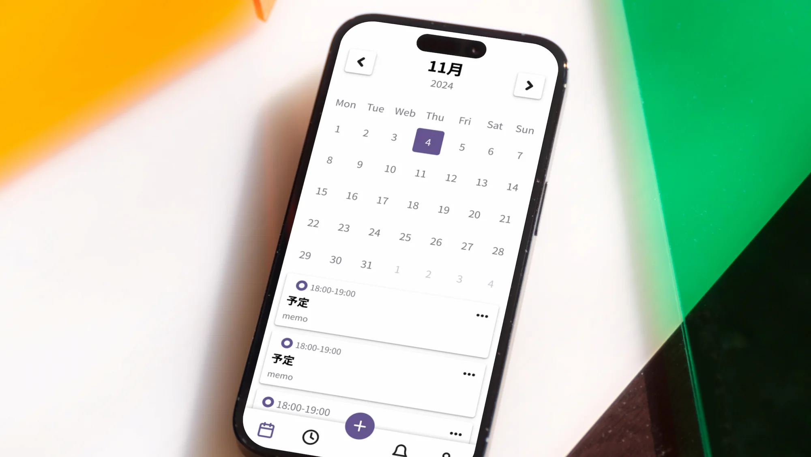

序
顧客の声を聞き、画面をつくり、仕組みまで設計してきました。
索引 ｜ 任せられる工程と、それを確かめられる章
| 工程 | 見られる章 |
|---|---|
| 要件整理 | |
| 情報設計 | |
| 画面設計 | |
| デザインシステム構築 | |
| ブランド設計〜実装 |
目次
第一部
仕事
第一章 製造業向け BtoB SaaS進行中
AI が出した答えを、人が判断できる形にする 製造業向けの BtoB SaaS で、プロダクトデザインと情報設計を担当しています。図面から部品表（BOM）を取り込む業務を、AI で自動化するプロダクトです。 要件整理・情報設計・画面設計・デザインシステム構築 第二章 BtoC 服薬管理アプリリリース済み 事実と予測を、混ぜない 慢性疾患の患者が日々の服薬を記録し、薬剤師がそれを見ながら支援するアプリです。患者本人と薬剤師、性質のまったく違う2種類のユーザーが同じプロダクトを使うという構造でした。 要件ヒアリング・情報設計・画面設計・UIデザイン 第三章 農園サイトリニューアル
注文導線と運用を改善する 10年以上前に立ち上げた農業法人サイトのリニューアルを担当しました。ブランド設計から Web サイト制作まで一貫して担当しています。 ブランド設計・ロゴデザイン・UI/UX設計・STUDIO実装 第四章 コーポレートサイト制作
世界観と企業価値を両立する ブランド価値や企業としての姿勢をより明確に伝えるため、独立したコーポレートサイトを新規制作しました。ブランドの世界観を保ちながら、企業理解・採用・信頼形成につながる情報設計を行っています。 ディレクション・情報設計・採用導線設計 第五章 レンタカー予約サイト
準備の不安を取り除く ロゴ制作からサイト設計・デザイン・実装まで、すべて一人で担当したプロジェクトです。ブランドの立ち上げ段階から関わり、ビジュアル設計と情報設計の両軸から、一貫した世界観づくりを行いました。 ブランド設計・ロゴデザイン・UI/UX設計・STUDIO実装 第六章 治療院サイトリニューアル
不安を安心に変える 「手技治療」という一般的には馴染みの少ない治療内容に対して、ユーザーが抱える不安を軽減し、安心感や信頼感につながるサイト設計を目指しています。 情報設計・コンテンツ構成設計・デザイン・実装 第七章 ファッションECアプリ UIデザイン自主制作 迷わず選び、スムーズに購入できる体験
ユーザーが迷わず商品を選択し、スムーズに購入まで進める体験を目的に設計したECアプリのUIデザインです。商品探索から購入完了までの一連の導線を意識し、認知負荷を抑えた情報設計を行いました。
第八章
カレンダーアプリ UIデザイン自主制作
迷わず選び、スムーズに購入できる体験
ユーザーが迷わず商品を選択し、スムーズに購入まで進める体験を目的に設計したECアプリのUIデザインです。商品探索から購入完了までの一連の導線を意識し、認知負荷を抑えた情報設計を行いました。
第八章
カレンダーアプリ UIデザイン自主制作

迷わず使えるシンプルな体験 ユーザーが直感的に予定を確認・登録できることを目的に設計したカレンダーアプリのUIデザインです。情報の見やすさと操作のしやすさを両立することを重視しています。第二部
歩み
受注電話を取るところから始めて、商品ページをつくり、最後は事業の仕組みを設計するところまで。担当するレイヤーは変わりましたが、やっていたことはずっと同じです。
其の一顧客対応2013 – 2015
其の二画面2015 – 2020
其の三事業2021 – 2024
其の四構造農園支援
付録
設計で動かした数字
1万人
会員数の増加（導入から半年）
ポイントと会員ランクを設計
1,100万円
プチギフトバッグの企画商品売上
価格・中身・パッケージを設計
チョコレートデザイン株式会社（VANILLABEANS）／ 2013 – 2024
著者紹介
今村 美紗
Mim.design ／ UI/UX・情報設計
2013年から11年間、チョコレートデザイン株式会社（VANILLABEANS）に在籍しました。受注電話を取るカスタマーサポートから始まり、Webデザイン、最後はブランドマーケティングのリーダーとして、会員制度や商品企画の設計までを担当しました。
現在は、製造業向け BtoB SaaS のプロダクトデザインと情報設計、BtoC アプリの UI 設計、大手証券会社のデザイン品質管理を担当しています。
やっていることは11年前と変わりません。使う人の状況を聞き取り、業務の流れを整理して、運用が続く形に落とす。扱う対象が、チョコレートの商品ページから業務システムの画面に変わっただけです。
つくったものを渡して終わりにはせず、運用が始まったあとの改善にも関わっています。
得意領域
- 間違いが実害につながる領域の情報設計（業務システム・医療）
- 複雑な情報を、迷わない形に構造化すること
- 運用チームが自分で回せる状態まで設計すること